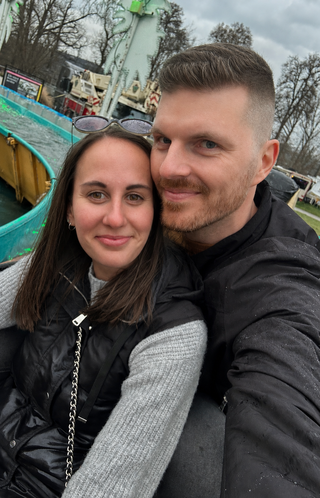

Tereza Bělinová & Radek Brynych
8. srpna 2026 • 12:00
Prosíme o potvrzení účasti co nejdříve.
Pančavský mlýn, Zbraslavice
Obřad začíná ve 12:00
Sejdeme se na místě kolem 11:00 a parkovat můžete v místě konání svatby.
Doporučujeme elegantní a slavnostní oděv.
V pozdějších odpoledních hodinách můžete zvolit pohodlnější oděv, například smart casual.
Největším darem pro nás bude, když dorazíte a užijete si s námi náš den
Pokud byste nás chtěli obdarovat, budeme rádi za peněžitý dar.
Na svatbě není třeba příliš fotit, budeme tam mít svého fotografa.
Pokud ale nějaké fotografie nebo videa pořídíte, budeme moc rádi, když se s námi o ně podělíte pomocí odkazu níže.
Do kolonky OD prosím vyplňte svůj e-mail.
Do kolonky KOMU zadejte:
tereza.belinova@post.cz